O naturalista alemão Ernst Haeckel acreditava não ser possível ter um bom conhecimento biológico sem conhecer o ambiente em que vivem os organismos. Em 1866, ele criou o termo “Ecologia” para o estudo da relação dos seres vivos entre
si
e/ou com o ambiente em que vivem, ou seja, o próprio planeta Terra.
Além de biólogo, zoólogo, filósofo e médico, Haeckel também era artista da natureza. Observe duas de suas famosas pinturas e, depois, responda às perguntas a seguir.
Nas pinturas de Haeckel, há diferença entre os ambientes representados? Quais são essas diferenças?
Qual a importância do ambiente para os seres vivos?
Objetivos da unidade
Compreender noções iniciais de Ecologia.
Reconhecer relações de dependência entre os seres e destes com os demais componentes do ambiente.
Relacionar as características dos seres vivos ao ambiente em que vivem.
Identificar as principais relações existentes entre os seres vivos.
Compreender como as relações entre os seres vivos interferem na dinâmica ambiental.
Os seres vivos e o ambiente
Quanta vida existe na Terra? Pense em todos os seres vivos que habitam o nosso planeta… Imagine quanta variedade… A diversidade de seres vivos que o nosso planeta abriga é chamada de biodiversidade.
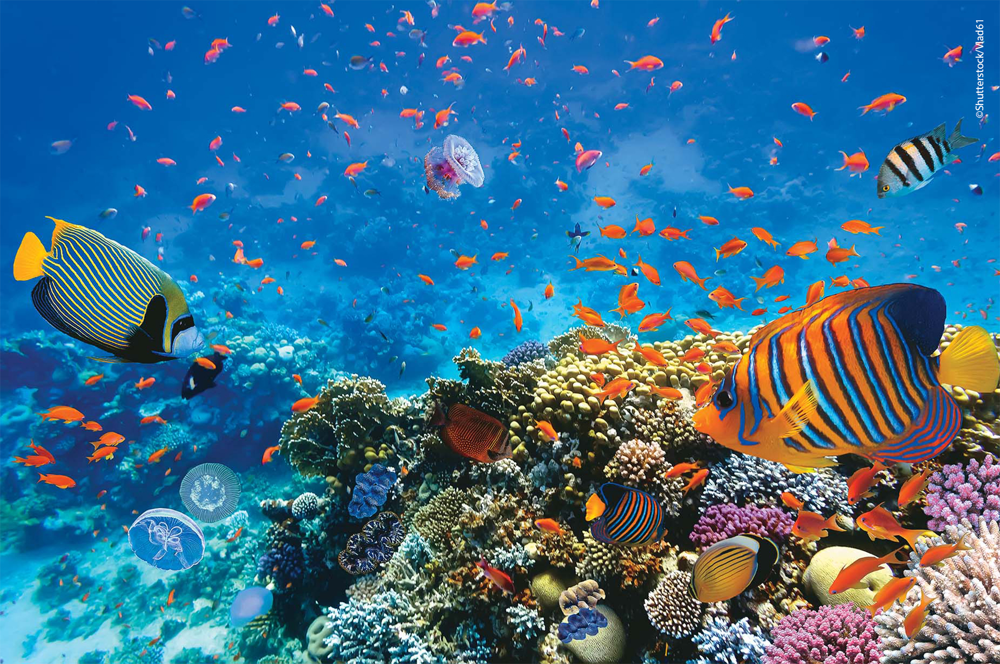
Biodiversidade marinha
Os seres vivos dependem uns dos outros e do ambiente que os cerca. A ciência que estuda as relações dos seres vivos entre si e com o ambiente é a Ecologia.
Ecossistemas
Um ambiente, como o da imagem da biodiversidade marinha, é habitado por diversos animais, algas e micro-organismos. Para que eles sobrevivam, é necessária a presença da luz, da temperatura adequada, da água, do oxigênio, do gás
carbônico e dos sais minerais presentes no ambiente, além de outros fatores. Esse conjunto de seres vivos e fatores do ambiente é denominado ecossistema.
Nos ecossistemas, os seres vivos correspondem aos fatores bióticos, enquanto as características do ambiente que fornecem as condições para sobrevivência (água, ar, solo, luz, calor, substâncias químicas, etc.) são
denominadas fatores abióticos (a = sem; bio = vida).
Os seres vivos de um ecossistema estão sempre interagindo entre si e com o ambiente, por isso dizemos que um ecossistema é dinâmico.
Observe novamente o ecossistema marinho da foto. Nele, podemos encontrar muitos seres vivos, como peixes, esponjas-do-mar, águas-vivas, corais e algas. O conjunto de todos os seres vivos que fazem parte de um ecossistema recebe o nome
de comunidade. Se considerarmos somente o conjunto de organismos da mesma espécie, teremos uma população. Por exemplo, a população de peixes-anjo.
espécie: conjunto de indivíduos semelhantes entre si e que têm a capacidade de se cruzarem, gerando descendentes férteis.
Observe, no esquema a seguir, a organização de um ecossistema com base em um indivíduo (ser vivo):
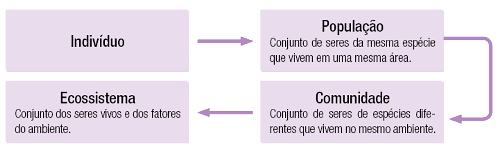
Hábitat e nicho ecológico
Dentro de um ecossistema, existem locais em que cada espécie está melhor adaptada para viver. Esse local onde cada organismo vive, com tudo aquilo de que precisa, recebe o nome de hábitat.
Em seu hábitat, cada ser vivo realiza várias atividades. O conjunto de tudo que um ser vivo faz, a forma como vive, seus hábitos e necessidades é chamado de nicho ecológico.
De uma forma geral, podemos pensar que hábitat é onde o ser vive, enquanto nicho é como ele vive.
O lobo-guará pode ser encontrado no Cerrado (seu hábitat). Ele é, geralmente, solitário e tem uma dieta bem variada, alimentando-se de insetos, pequenos mamíferos e de frutos silvestres (nicho ecológico).
Conexões
O desmatamento, as queimadas, a poluição do solo e das águas, a caça, a emissão de gases do efeito estufa, entre outros fatores, transformam rapidamente os ambientes, reduzindo a diversidade de vida. Muitos seres vivos não conseguem
sobreviver em ambientes degradados e, com isso, correm o risco de desaparecer, ou seja, de entrar em extinção. O tatu-bola, por exemplo, está ameaçado de extinção devido à caça e à destruição dos ambientes naturais onde ele vive.
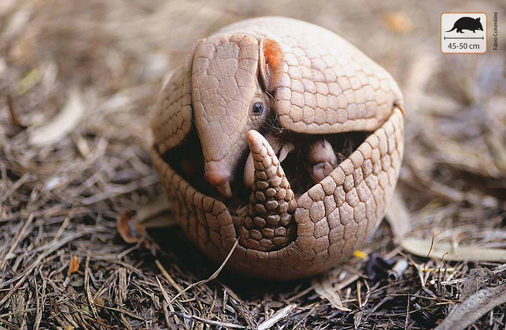
Tatu-bola, animal existente apenas no Brasil
Já a ararinha-azul é considerada extinta na natureza desde o ano 2000. Isso significa que, desde então, não foram mais encontradas na natureza.
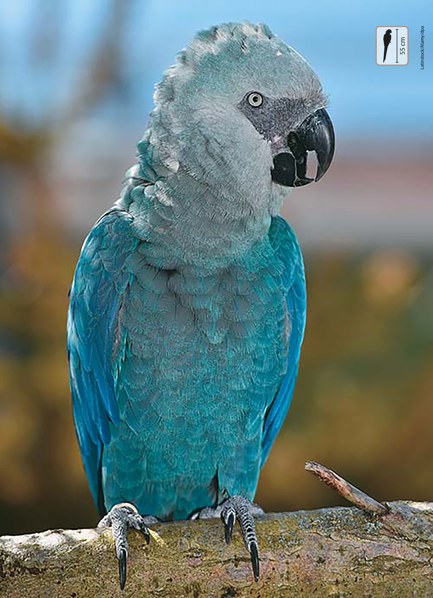
Atualmente, a ararinha-azul só é encontrada em cativeiros.
Na região do país onde você mora, há algum ser vivo ameaçado de extinção? Pesquise e apresente informações sobre onde ele vive, quais são as principais ameaças e algumas ações para garantir a sobrevivência desse ser.
Há um documento, organizado pela União Internacional para a Conservação da Natureza e dos Recursos Naturais, chamado de Lista Vermelha. Nele são divulgados os nomes de espécies de plantas e animais do mundo inteiro que estão
ameaçados de extinção. O objetivo é informar e alertar a sociedade sobre os seres vivos que correm o risco de desaparecer da natureza e incentivar ações que garantam a sobrevivência deles.
Organize as ideias
Vamos colocar em prática alguns conceitos que vimos até agora? Para isso, escolha um ser vivo e faça uma pesquisa sobre ele. Na sequência, preencha a ficha a seguir, completando os conceitos e elabore, em seu caderno, alguns desenhos
que os representem.
Organismo:
Cada indivíduo que faz parte da população.
População:
Conjunto de vários indivíduos da mesma espécie.
Comunidade:
Hábitat:
Nicho ecológico:
Ecossistema:
atividades
1. De acordo com a imagem abaixo e seus conhecimentos sobre Ecologia, assinale V para as frases verdadeiras e F para as falsas.
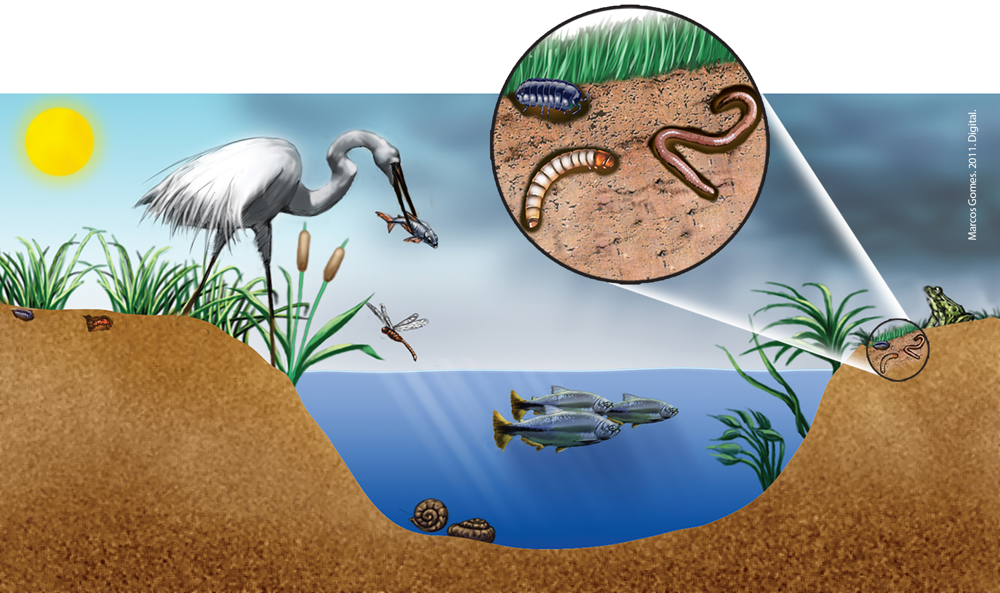
a) ( ) A imagem retrata um ecossistema.
b) ( ) Ao considerar todos os seres vivos desse ambiente, tem-se uma população.
c) ( ) A luz solar, o solo e a água são considerados fatores bióticos desse ambiente.
d) ( ) Os peixes do rio formam uma população.
e) ( ) Os organismos do solo, que estão em destaque, formam uma comunidade.
f) ( ) Se alimentar de peixes faz parte do nicho ecológico da garça.
2. Analise, a seguir, a imagem de um ambiente marinho e, na sequência, faça o que se pede.
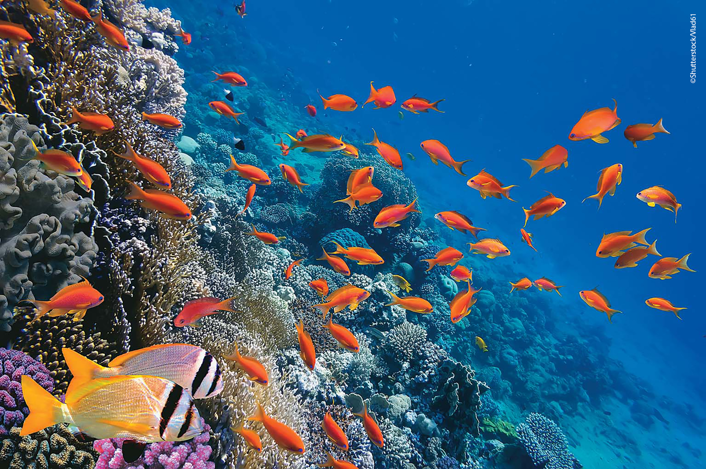
a) Analise a imagem e indique nas linhas a seguir um exemplo de indivíduo, de população e de comunidade.
b) O ambiente retratado é um ecossistema. Como você justifica essa afirmação?
3. Aves marinhas, como as gaivotas, constroem seus ninhos em penhascos. Lá os ovos e os filhotes ficam protegidos de seus predadores.
Qual foi o conceito de ecologia tratado na afirmação acima?
a)
b)
c)
d)
4. Leia, com atenção, os trechos que descrevem algumas características da arara-azul, uma espécie de ave ameaçada de extinção. Depois, relacione adequadamente as colunas, indicando os termos que melhor classificam cada frase.
( a ) Hábitat
( b ) Nicho ecológico
( c ) População
( d ) Comunidade
( ) As araras-azuis são aves que se destacam pela beleza.
( ) O manduvi é uma das poucas árvores em que as araras constroem seus ninhos.
( ) Nas florestas úmidas, prefere locais de várzea ricos em palmeiras.
( ) Voam em pares ou em grupo e, nos fins de tarde, se reúnem em bandos para dormir em árvores.
5. Leia um trecho retirado de um texto sobre a onça-pintada.
[...] ela está cada vez mais ameaçada e pode desaparecer para sempre da Mata Atlântica. Por sorte, porém, existem pesquisadores dispostos a enfrentar uma corrida contra o tempo para salvá-la.
Beatriz de Mello Beisiegel, analista ambiental do Instituto Chico Mendes de Conservação da Biodiversidade, explica que as duas maiores ameaças à sobrevivência da onça-pintada são a caça e a destruição dos ambientes naturais onde
ela vive. [...]
Segundo a pesquisadora, são três as linhas de ação principais para salvar as onças. “Temos procurado atuar no controle da caça, no aumento das áreas de preservação das onças e também no estímulo a novos estudos sobre esse animal,
pois quanto mais o conhecermos, melhor será possível protegê-lo”, garante.
CARVALHO, Isabelle. Bela em extinção. Disponível em:
. Acesso em: 4 jan. 2017.
a) Qual é o tema central do texto?
b) Quais são as principais atividades humanas que podem prejudicar a sobrevivência da onça-pintada?
c) Converse com seus colegas e responda: Por que é importante conhecer para proteger?
Estratégias de sobrevivência
Além da interferência humana sobre a biodiversidade do planeta, há muitos fatores que influenciam a sobrevivência das espécies em seus variados hábitats. As condições do ambiente, como quantidade de água, intensidade de luz, composição
do solo, temperatura, entre outros, interferem diretamente na sobrevivência dos seres vivos.
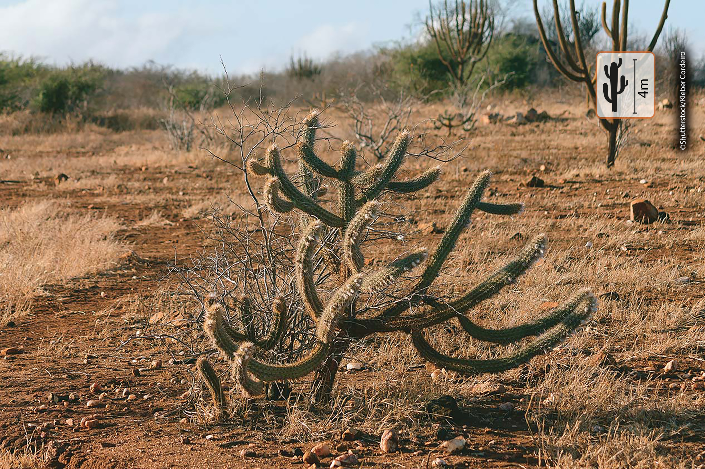
Cactos, plantas típicas de ambientes secos, apresentam a capacidade de armazenar água no interior de seu caule.
Ao longo da história evolutiva, os seres vivos vêm sofrendo transformações que lhes possibilitam maiores chances de sobrevivência no ambiente. Além da capacidade reprodutiva, há outras estratégias relacionadas à defesa, à alimentação,
à manutenção da temperatura, etc. Para atrair a fêmea para o acasalamento, capturar uma presa com mais facilidade, sobreviver à pouca disponibilidade de água ou, até mesmo, resistir às baixíssimas temperaturas, os seres vivos apresentam
características que colaboram para sua sobrevivência.
Defesa
Você já observou que certos organismos podem passar despercebidos em algumas situações? Analise as imagens a seguir.
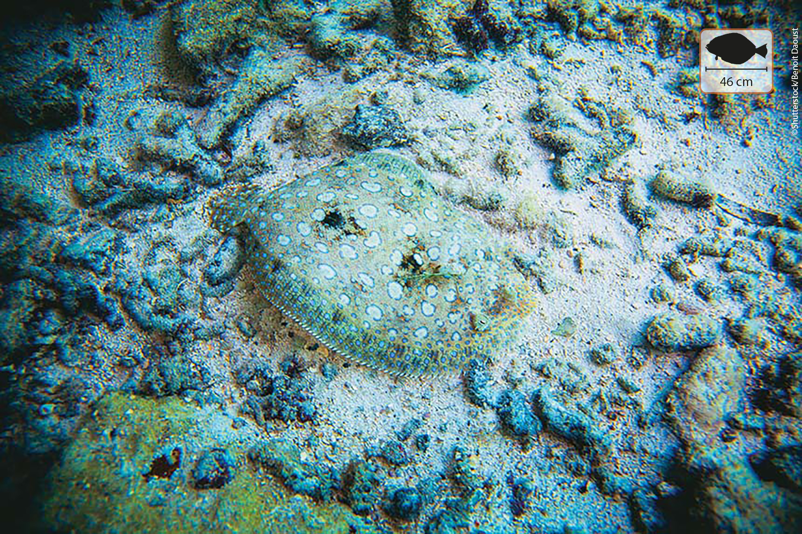
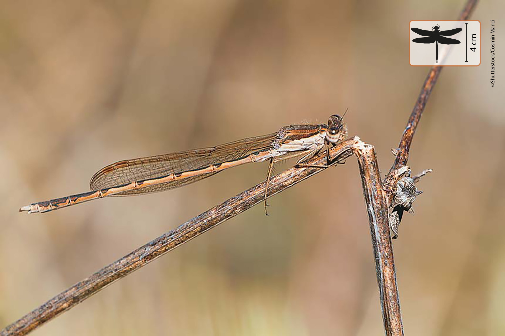
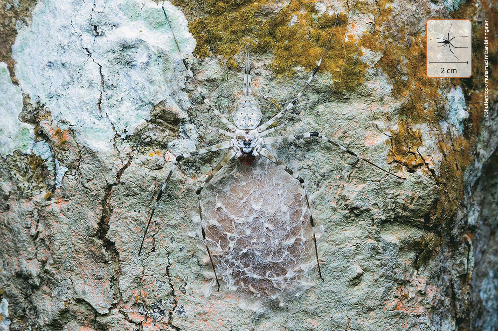
Em todas elas, você conseguiu identificar de imediato que havia um animal no ambiente? É provável que não, pois esses animais apresentam características que os confundem com o ambiente em que estão. Assim, uma presa dessas pode escapar
de seus predadores. Essa estratégia é chamada de camuflagem.
Agora observe que curioso este exemplo.
Borboleta-coruja
A borboleta-coruja apresenta manchas nas asas que se parecem com a cabeça de uma coruja (especialmente os olhos). Assim, os predadores são enganados, pois confundem a borboleta com um predador maior. O caso da borboleta-coruja é um
exemplo típico de mimetismo, segundo o qual uma espécie se confunde com outra. O predador localiza a presa (espécie mimética), mas não a ataca, porque a sua aparência lembra a de outra espécie, normalmente mais forte ou
venenosa.
Outra adaptação relacionada à defesa é a produção de substâncias tóxicas ou venenosas. Podemos citar inúmeros seres vivos que se utilizam de substâncias tóxicas para se defender.
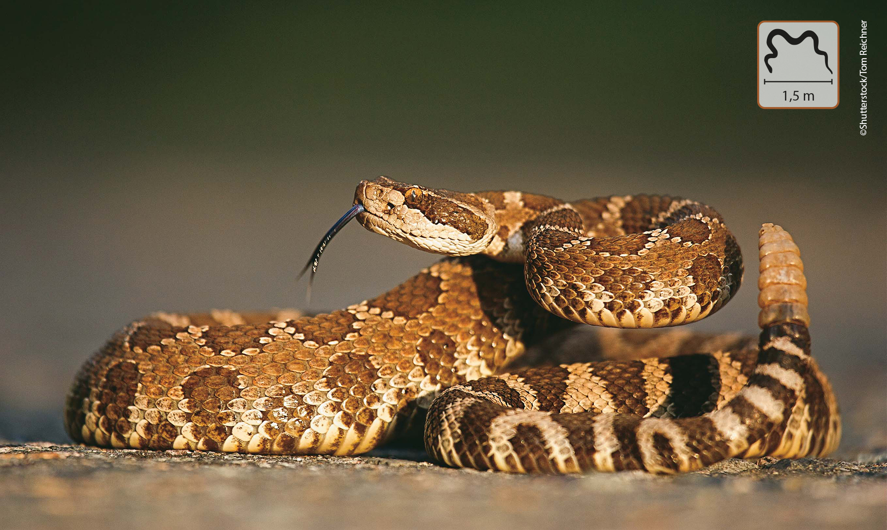
A cascavel é uma serpente peçonhenta porque pode inocular uma substância tóxica em outros animais para capturá-los.
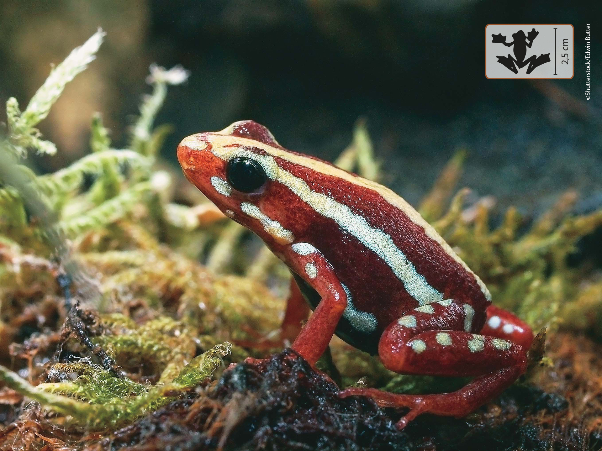
Esse anfíbio, de apenas 2,5 cm, tem um veneno extremamente poderoso.
Conexões
Alerta verde
Você sabia que algumas plantas comuns em casas e escolas são venenosas?
Que as plantas servem de alimento para muitos animais, você já deve saber. Mas você já pensou que elas desenvolvem diversos mecanismos de defesa para tentar evitar serem devoradas? Algumas plantas, por exemplo, produzem venenos que
podem ser perigosos até para os humanos.
Existem no mundo centenas de espécies vegetais venenosas. Algumas delas têm seu veneno sempre presente, outras produzem substâncias tóxicas apenas quando se sentem ameaçadas. De uma maneira ou de outra, quando ingeridas ou em
contato com a pele, as plantas venenosas podem fazer mal e as maiores vítimas de casos de intoxicação são as crianças de até 10 anos.
Uma pesquisa feita pela Fundação Oswaldo Cruz mostrou que as plantas tóxicas estão mais perto do que imaginamos. Um trio de pesquisadoras visitou 69 escolas do município do Rio de Janeiro e notou que 58 delas possuíam pelo menos
uma espécie de planta tóxica – e nem sabiam disso!
Entre as cientistas estava a estatística Rosany Bochner. Ela explica que espécies vegetais como a espirradeira e a comigo-ninguém-pode são muito comuns, mas poucas pessoas sabem que fazem mal à saúde. Por isso, é importante se
informar. “As plantas não são vilãs. Elas produzem veneno apenas para se defender na natureza”, destaca a pesquisadora.
[...] abaixo, você pode conferir algumas plantas venenosas [...]. Porém, não precisa se assustar nem fugir de tudo que é verde: o mais importante é ter cuidado e não mexer nas plantas – mesmo quando estão dentro de casa ou na
escola.
A reprodução é importante para a sobrevivência das espécies. Sem um mecanismo de reprodução, não seria possível aos seres vivos ocuparem a Terra ao longo dos séculos. A reprodução é uma das características dos seres vivos e, para
realizá-la, adotam alguns comportamentos.
Animais que vivem em regiões muito frias podem se deslocar para regiões mais quentes em busca de alimento e de temperaturas mais amenas para se reproduzir. Nessas condições, os filhotes têm maiores chances de sobreviver.
Muitas espécies de aves realizam migrações. As andorinhas-do-mar-ártico (Sterna paradisaea) voam do Ártico à Antártida e voltam ao Ártico. Estima-se que cada ave voa, em média, 70 000 quilômetros por ano.
Os ovos de sapos, rãs e pererecas não são protegidos por uma casca dura. Eles perdem água com facilidade e, por isso, precisam ficar sempre úmidos para que ocorra o desenvolvimento seguro do embrião. Para garantir que isso aconteça, os
ovos desses animais se desenvolvem na água, envolvidos por uma substância gelatinosa, protegendo-os contra a desidratação. Assim, aumentam as chances dos embriões se desenvolverem e tornarem-se adultos.
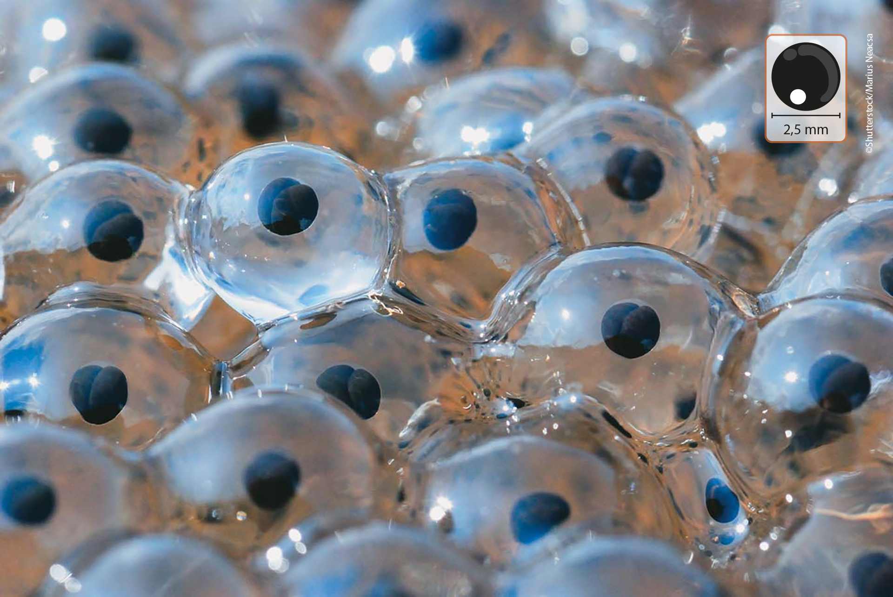
Ovos gelatinosos de sapos
Os machos de pássaros-cetim (Ptilonorhynchus violaceus) conquistam as fêmeas com uma série de presentes. Curiosamente, a fêmea é fascinada pela cor azul, então, o macho decora o espaço com objetos dessa cor e que possam atrair
a atenção da fêmea para o acasalamento.
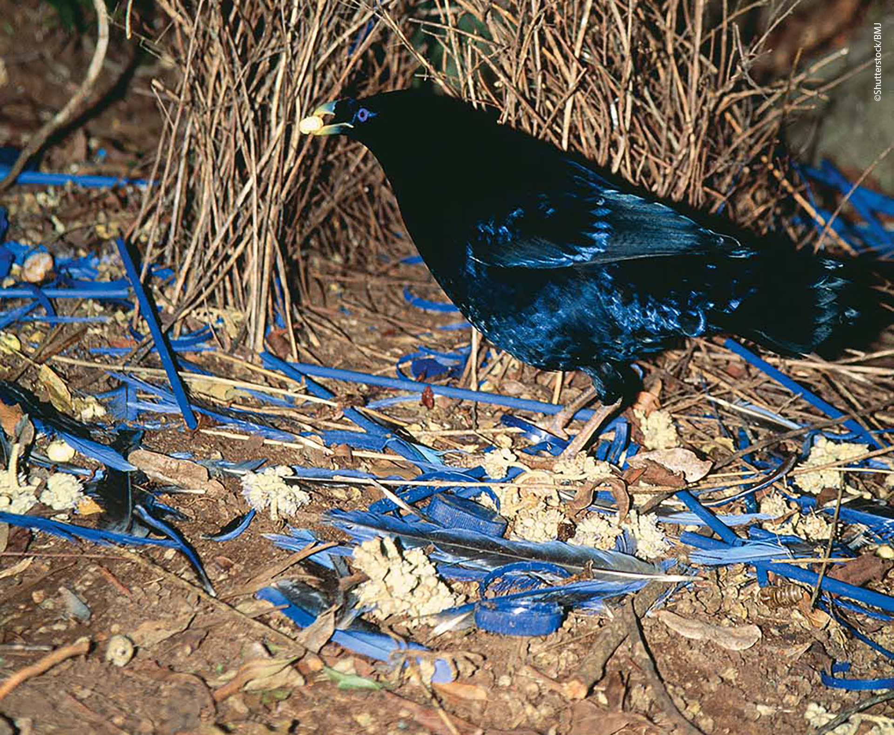
Macho de pássaro-cetim tentando atrair a fêmea, que gosta da cor azul
Os morcegos são animais de hábitos noturnos que voam e encontram seu alimento por um mecanismo conhecido como ecolocalização. Eles emitem ondas de alta frequência, denominadas ultrassons, que batem nos objetos e são
refletidas de volta, como um eco. Esse som refletido retorna ao ouvido dos morcegos e, assim, eles identificam os obstáculos do caminho e as presas a serem caçadas.
frequência: a frequência de uma onda sonora é definida como o número de oscilações que ocorrem em um intervalo de tempo.
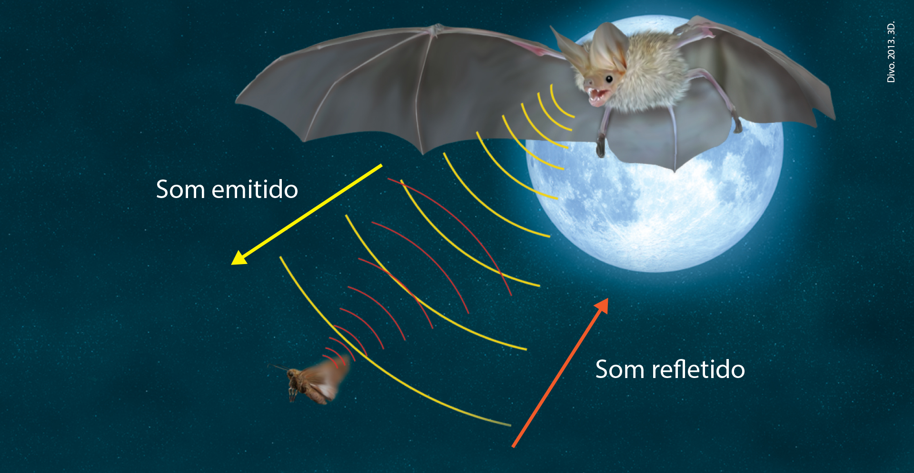
Esquema representativo da ecolocalização de um morcego
Manutenção da temperatura
Os animais que vivem em regiões muito frias ou muito quentes têm adaptações para manutenção da temperatura corporal. Essas características estão relacionadas à anatomia do corpo, ao seu funcionamento e, até mesmo, ao comportamento do
animal.
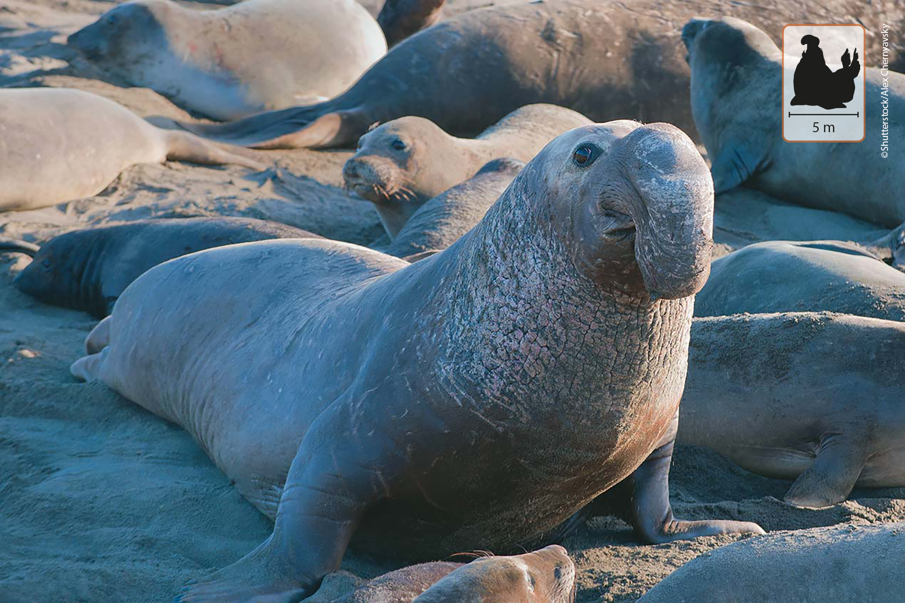
O elefante-marinho tem uma espessa camada de gordura subcutânea.
Muitos animais que vivem em ambientes com frio extremo têm uma grossa camada de gordura embaixo da pele. Essa gordura age como um isolante térmico, dificultando a perda do calor gerado pelo corpo para o ambiente.
As penas e os pelos também agem como isolantes térmicos e dificultam a perda de calor. Isso porque, entre eles, há uma camada de ar. É esse ar que dificulta as trocas de calor com o ambiente externo. Quanto mais espessa a camada de
pelos e penas, maior a proteção contra o frio.
Quando as temperaturas caem, os animais conseguem aumentar essa camada de isolamento, arrepiando os pelos ou levantando as penas um pouco mais.
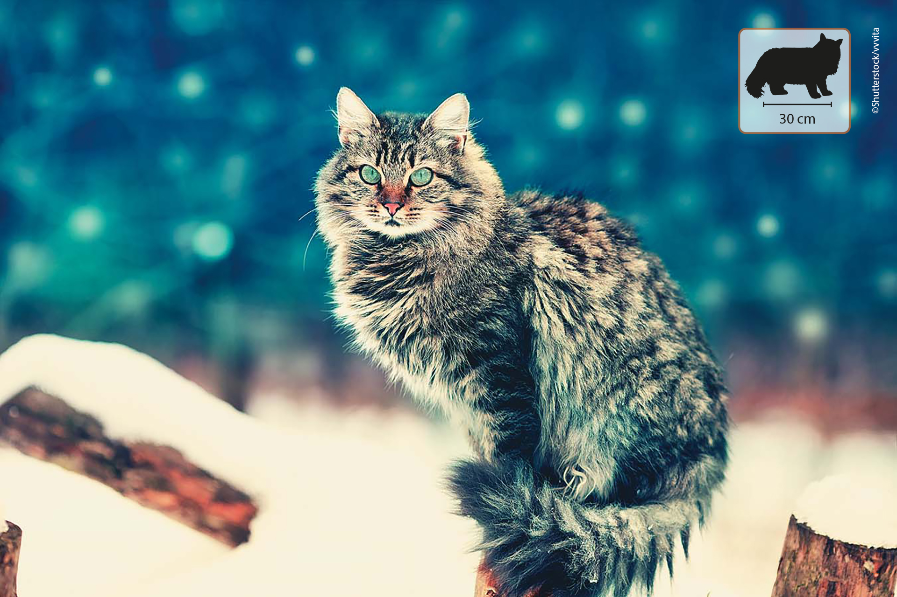
O gato siberiano apresenta longos pelos e, no frio, consegue eriçá-los para acumular mais ar entre eles.
No inverno, os dias ficam mais curtos e as temperaturas caem muito, tornando menor a disponibilidade de alimentos. Por esse motivo, alguns animais entram em hibernação, processo no qual o metabolismo sofre mudanças para conservar
energia. Os batimentos cardíacos e os movimentos respiratórios diminuem. A energia para a manutenção do organismo é retirada da gordura corporal acumulada durante a primavera e o verão. Poucos animais fazem hibernação verdadeira, como
os ursos-negros, as marmotas, os esquilos e alguns morcegos. Para hibernar, esses animais geralmente se escondem em abrigos, para se proteger de predadores.
Os animais que vivem em climas muito quentes, como em muitas regiões da África, apresentam uma série de adaptações que ajudam a evitar o superaquecimento do corpo. As girafas, por exemplo, têm as pernas e o pescoço enormes que, entre
outras funções, facilitam a circulação do ar e a troca de calor. Os elefantes africanos têm suas enormes orelhas percorridas por um sistema de vasos sanguíneos que ajuda na tarefa de promover o resfriamento do sangue a cada abanada das
orelhas.
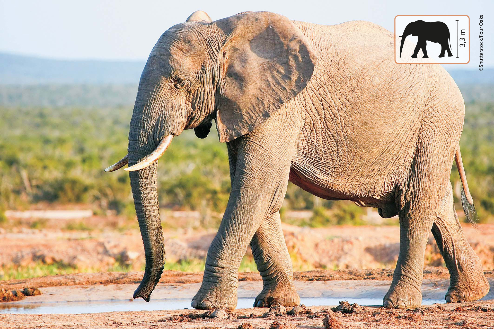
O elefante africano tem adaptações ao clima quente.
O mocó, um roedor encontrado na Caatinga, vive entre fendas das rochas, onde há sombra e mais umidade. Ao evitar a exposição excessiva ao calor solar, esse animal garante sua sobrevivência.
Saiba +
Sem um padrão de migração, o pinguim-imperador passa os invernos no continente antártico. É também no longo e gelado inverno que os machos chocam um único ovo, que fica sobre as patas e é coberto por uma prega de pele com penas.
Para manter o calor, os pinguins se aglomeram bem juntinho uns dos outros. Os animais do centro do aglomerado vão se deslocando para as bordas e estes para o centro. O movimento é contínuo e garante a sobrevivência de todos, apesar
das temperaturas extremas que chegam, em média, a quarenta graus negativos. Sem poder se alimentar, os animais usam a gordura que foi acumulada no corpo durante o verão. Além de fonte de energia, essa gordura fornece isolamento
contra o frio.
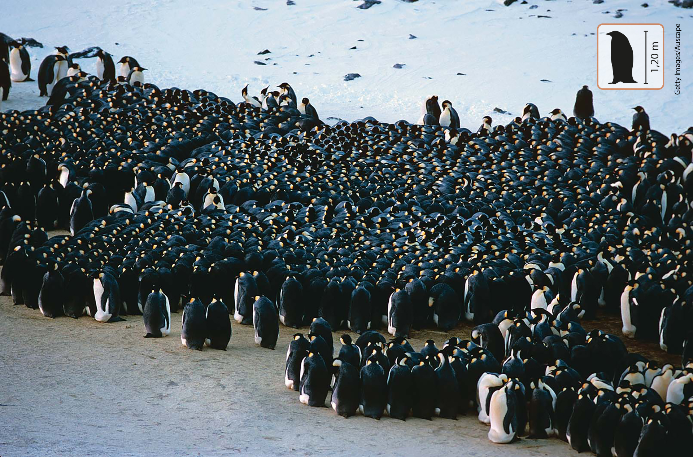
No inverno antártico, os pinguins-imperadores formam grandes aglomerados de modo que mantêm o calor.
Atividades
1. Observe a imagem ao lado. Você consegue identificar que ser vivo há na foto? É um polvo! Os polvos apresentam diversas células pigmentadas, denominadas cromatóforos, que podem mudar de cor de acordo com o ambiente. Isso os ajudam a
se proteger de predadores e a capturar presas.
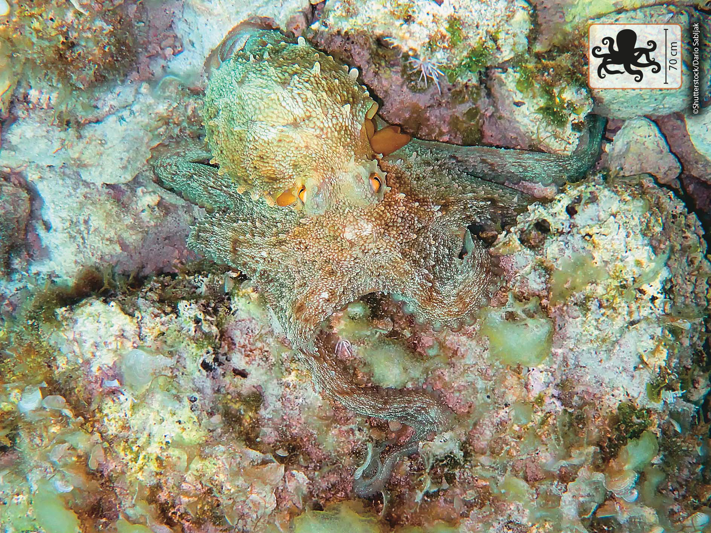
a) Qual é a estratégia de sobrevivência apresentada pelo polvo? Justifique sua resposta.
b) Qual é a importância dessa estratégia?
2. Leia as frases a seguir e marque C para camuflagem e M para mimetismo.
a) ( ) A orquídea Ophrys apifera apresenta flores que lembram as fêmeas de uma abelha. Com isso, as flores atraem os zangões, que as polinizam.
b) ( ) O bicho-pau é um inseto que apresenta a estrutura corporal semelhante a um graveto, ficando escondido na vegetação.
c) ( ) O gafanhoto quase não pode ser notado quando está sobre folhas verdes.
d) ( ) A borboleta-vice-rei tem as mesmas cores da borboleta monarca. As borboletas monarcas têm um gosto ruim, o que faz com que seus predadores passem mal ao ingeri-las.
e) ( ) A coloração do sapo-boi se assemelha a folhas secas caídas no chão da floresta.
3. Leia o texto e, na sequência, faça o que se pede.
Fulano é um lobo em pele de cordeiro! Já escutou alguma coisa parecida? A expressão é usada para falar sobre uma pessoa que finge, em sua aparência ou comportamento, ser o que não é. Mas o disfarce não é exclusividade dos seres
humanos: na natureza, é muito comum que espécies animais e vegetais se passem por outras para se defenderem, caçarem e até se reproduzirem. [...]
Um disfarce curioso é o da lagartixa Coleodactylus brachystoma. Encontrada em Goiás e Mato Grosso, ela se defende dos inimigos de uma forma curiosa: levanta a cauda, imitando um escorpião. Os predadores, com medo de serem
ferroados
pela inofensiva lagartixa na pele de escorpião, fogem.[...]
CONRADO, Lucas. Lagartixa em pele de escorpião. Disponível em:
<http: //chc.cienciahoje.uol.com.br/lagartixa-em-pele-de-escorpiao>. Acesso em: 5 jan. 2017.
a) Que estratégia de sobrevivência é utilizada pela lagartixa?
b) Complemente a resposta anterior, grifando, no texto, a explicação de tal estratégia.
c) A estratégia mencionada no texto é utilizada por animais e, até mesmo, por plantas, em diferentes situações. Assinale a imagem que representa um exemplo da mesma estratégia usada pela lagartixa.
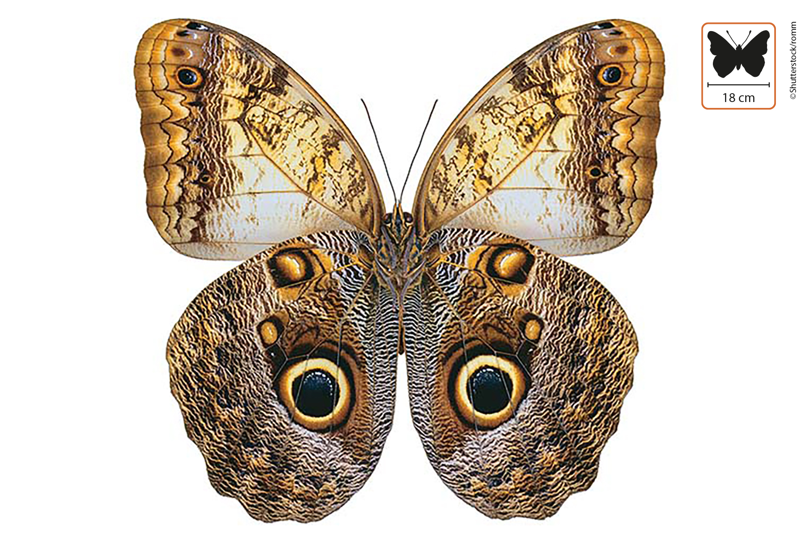
Assim é uma borboleta-coruja quando está parada no ambiente.
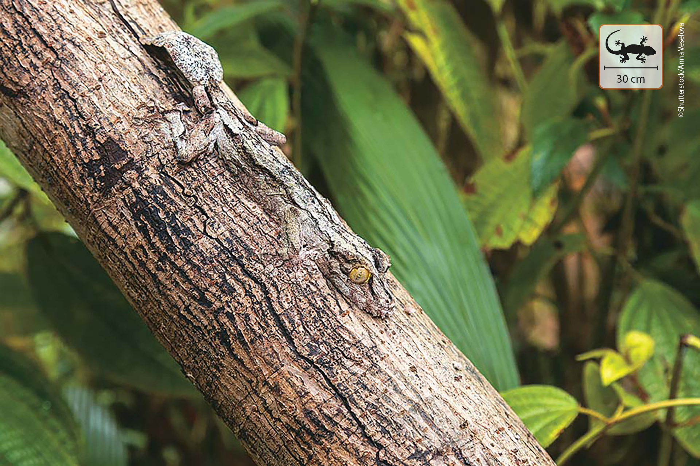
A lagartixa gigante se confunde com o tronco da árvore.
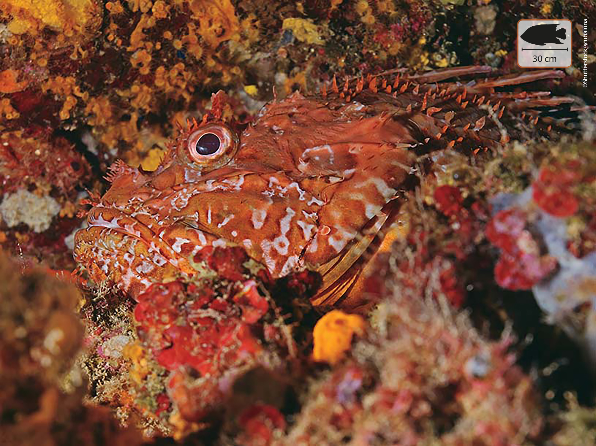
O peixe-escorpião quase não consegue ser percebido no fundo oceânico.
4. Os organismos estão adaptados ao ambiente em que vivem. Assim, ao observarmos as características dos seres vivos, é possível ter uma ideia de como é o local que habitam. O cacto, por exemplo, tem suas folhas modificadas em espinhos,
o que reduz a perda de água por evaporação. Os espinhos também protegem a planta da ação de animais que poderiam usá-la como alimento. Além disso, ele tem raízes longas que auxiliam na captação de água em locais mais profundos do solo.
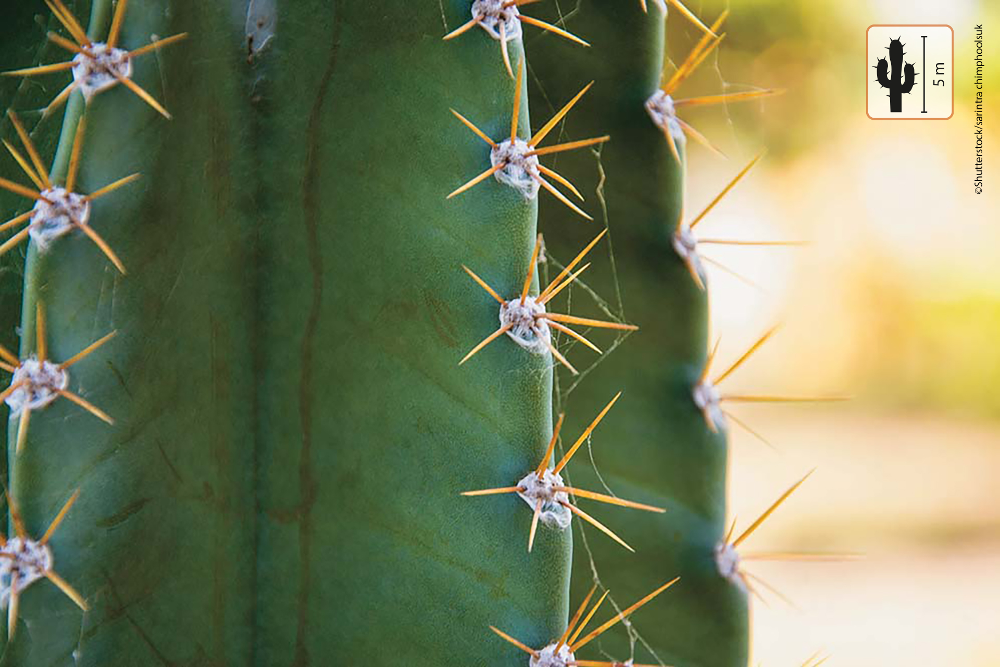
Assim, pelas informações que acabou de ler sobre o cacto, crie uma legenda que descreva as características do seu hábitat.
5. Cada fêmea de uma determinada espécie de bacalhau do Atlântico produz mais de 5 milhões de ovos. Porém, cerca de 99% dos filhotes, em seu primeiro mês de vida, servem de alimento para outros animais aquáticos.
a) Qual é a estratégia de sobrevivência do bacalhau?
b) Por que, nos animais com fecundação externa, como o bacalhau e os sapos, há uma produção de ovos tão numerosa?
6. Nós, seres humanos, também temos estratégias para enfrentar determinadas condições. Em dias muito quentes, é comum que a produção de suor aumente. Isso porque, ao evaporar, o suor refresca nosso corpo.
Nos dias gelados do inverno, é comum que nossos pelos fiquem eriçados.
Sobre esse tema, marque V para as frases verdadeiras e F para as falsas.
a) ( ) O eriçamento dos pelos aumenta a camada de ar próxima da superfície da pele.
b) ( ) Os pelos eriçados fazem com que o corpo perca mais calor.
c) ( ) O ar retido junto aos pelos diminui a perda de calor para o ambiente e o suor auxilia a diminuir a temperatura.
d) ( ) A liberação de suor e o eriçamento de pelos são estratégias para manutenção da temperatura corporal.
e) ( ) A presença de gordura embaixo da pele não interfere na manutenção da temperatura.
Relações ecológicas
Os seres vivos não estão isolados no ambiente, pois eles são influenciados pelas características do local em que habitam e, também, por outros seres com os quais se relacionam. Assim, consideramos que esses organismos estão adaptados
não somente ao ambiente físico, mas também uns aos outros.
Acompanhe, de maneira divertida, um exemplo de como os seres vivos podem se relacionar.
A tirinha ao lado retrata a associação entre o crocodilo e o pássaro-palito. O crocodilo permite que o pássaro retire os restos de alimentos entre seus dentes, para ficar com a “boca limpa”. Com isso, o pássaro obtém seu alimento.
Na relação entre o crocodilo e o pássaro-palito, qual dos organismos é beneficiado? Justifique a sua resposta.
Assim como no exemplo que acabamos de ver, os seres vivos estabelecem entre si os mais variados tipos de relação.
Todos esses organismos desempenham um papel no ecossistema e se relacionam entre si. As relações entre os seres vivos de um ecossistema são chamadas de relações ecológicas.
Em alguns tipos de relações ecológicas, os indivíduos são beneficiados e, em outras, podem sofrer prejuízos.
Quando os seres vivos se relacionam e pelo menos um deles é prejudicado, como quando um sapo se alimenta de um inseto, chamamos a relação de desarmônica.
Quando nenhum dos organismos que se relacionam é prejudicado, a relação é harmônica.
As relações harmônicas e desarmônicas são necessárias para os ecossistemas, pois regulam o tamanho das populações, mantendo um equilíbrio dinâmico.
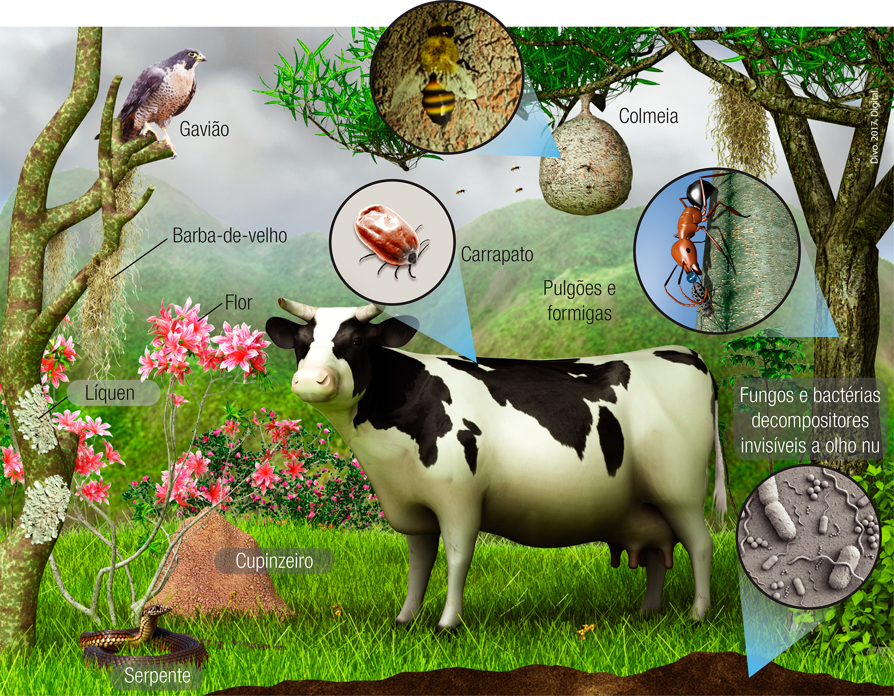
Alguns seres vivos e suas relações no ambiente natural
Retome a pergunta do início da página anterior e responda à questão: A relação retratada na tirinha é harmônica ou desarmônica?
Relações harmônicas
São exemplos de relações harmônicas: o mutualismo, a protocooperação, a sociedade, a colônia, o inquilinismo e o comensalismo.
Mutualismo
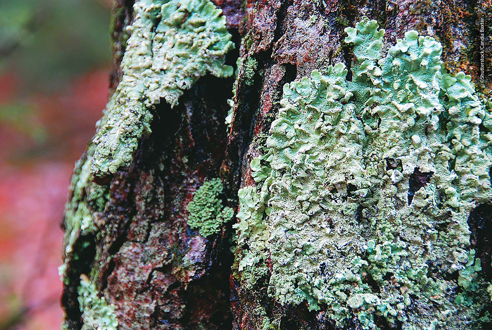
Liquens sobre tronco de árvore
É provável que você já tenha visto liquens. Eles são comumente encontrados em troncos de árvores e apresentam-se em cores e formas variadas. Os liquens são a associação mutualística entre dois organismos: uma alga (ou cianobactéria) e
um fungo. Nesse caso, a alga realiza fotossíntese e fornece parte da matéria orgânica que produz para o fungo. Assim, a alga beneficia o fungo ao lhe dar o alimento de que este precisa. Em contrapartida, a alga necessita de umidade e de
sais minerais que são fornecidos pelo fungo.
Outro exemplo de mutualismo é o que acontece entre cupins e alguns protozoários. Dentro do intestino dos cupins, vivem alguns protozoários que se alimentam da celulose ingerida pelo inseto. Como os cupins não conseguem digerir a
celulose, eles obtêm ajuda dos protozoários que fazem esse trabalho de digestão. Em contrapartida, recebem alimento e proteção.
No mutualismo, os dois organismos são beneficiados, e essa relação é considerada de dependência, pois eles, em geral, não vivem separadamente.
Protocooperação
A protocooperação é parecida com o mutualismo, porém nela a associação não é obrigatória e os seres envolvidos podem viver separados, sem ter qualquer tipo de prejuízo. Essa relação também é chamada de mutualismo não obrigatório.
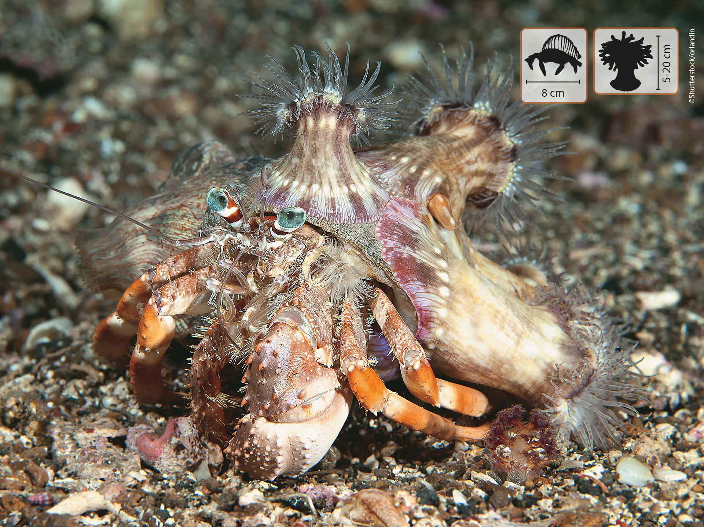
Paguro e anêmona em uma relação benéfica para ambos
Um exemplo é o que acontece entre o paguro, um tipo de caranguejo de abdômen mole, e a anêmona-do-mar. Para se proteger dos seus predadores, o paguro aloja-se em conchas vazias de caramujos. Sobre essas conchas, anêmonas-do-mar podem
se fixar. Assim, o paguro carrega a anêmona para locais onde existe alimento fácil. Por outro lado, a anêmona, que apresenta células urticantes (que causam queimaduras), afugenta os predadores.
Sociedade
Nas sociedades, indivíduos da mesma espécie vivem juntos e colaboram para o bem de todos. Uma das principais características das sociedades é que existe uma divisão de trabalho. Enquanto alguns indivíduos realizam a proteção do grupo,
outros procuram alimento ou são responsáveis pela reprodução. Cada grupo que compõe a sociedade e apresenta tarefas definidas é denominado casta. Alguns exemplos de sociedades são: as abelhas, as vespas, as formigas e
os cupins.
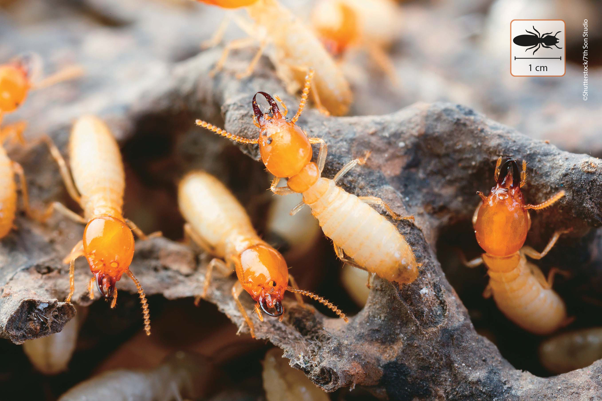
Cupins sobre madeira em decomposição
Organização de um formigueiro
Um formigueiro apresenta entradas interligadas por extensas galerias ou túneis que se abrem em câmaras que apresentam diversas finalidades. Há quatro tipos de formigas em um formigueiro:
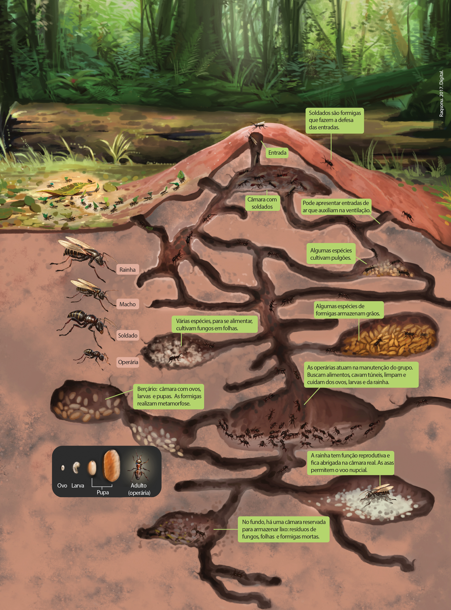
Colônia
As colônias são associações entre seres da mesma espécie, que vivem unidos fisicamente e se beneficiam do agrupamento, pois, assim, obtêm mais proteção e alimentos.
Você já viu um recife de corais? Esses recifes são sistemas complexos que incluem muitos animais e esqueletos produzidos por corais. Esses esqueletos fazem com que todos os indivíduos permaneçam unidos e, assim, obtenham maior
proteção. Os corais são exemplos de colônias que podem chegar a vários quilômetros de comprimento.
Recife de corais em Abrolhos, Bahia
Inquilinismo
O inquilinismo é uma relação na qual um ser vivo utiliza o outro como suporte ou abrigo. Esse tipo de relação não causa nenhum tipo de dano ao organismo que é habitado e também não retira dele nenhum alimento. Exemplo disso são as
bromélias e as orquídeas, que vivem sobre outras plantas, encontrando melhores condições de luminosidade. Nessa relação, também chamada de “epifitismo”, uma planta usa a outra como suporte, sem causar nenhum dano.
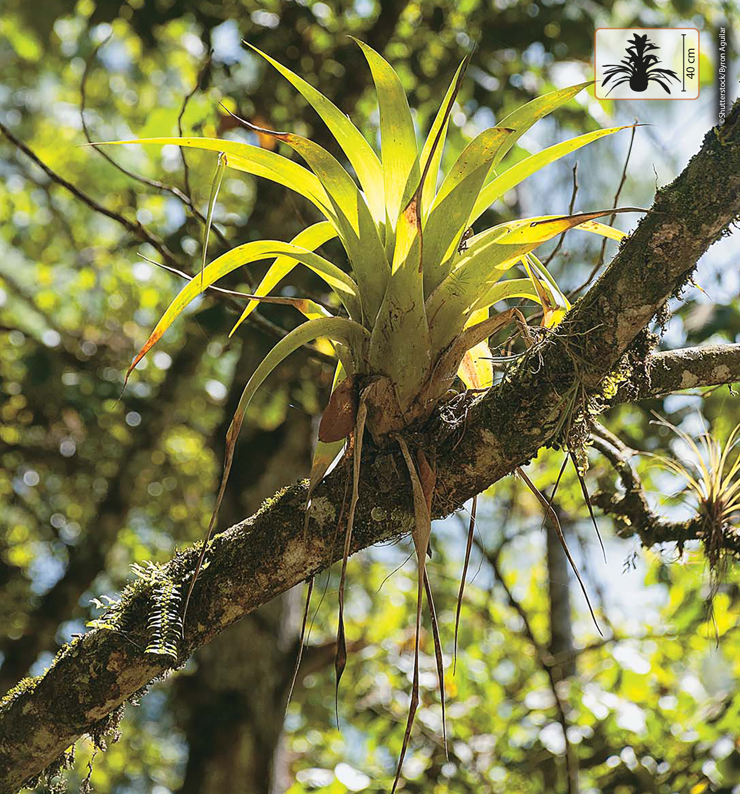
Bromélias, plantas muito comuns na Mata Atlântica
Comensalismo
É uma relação em que uma das espécies se beneficia e a outra não é prejudicada. A espécie que se beneficia é chamada “comensal”. Ela se alimenta dos restos de alimentos da outra espécie.
A associação entre a rêmora e o tubarão é de comensalismo. Enquanto o tubarão nada, a rêmora fica grudada a ele por uma ventosa. Quando o tubarão se alimenta, a rêmora se desprende dele e nada em busca dos restos de alimento.
Rêmoras aderidas a um tubarão
Repare que, tanto no inquilinismo quanto no comensalismo, apenas uma das espécies é beneficiada. A diferença é que, no comensalismo, obtêm-se restos de alimento e, no inquilinismo, proteção e suporte.
Relações desarmônicas
Nas relações desarmônicas entre seres vivos, um deles é sempre prejudicado, ou seja, um ser vivo é beneficiado à custa de outro. São exemplos dessas relações o parasitismo, o predatismo, o canibalismo e a competição.
Parasitismo
Você já deve ter ouvido a palavra “parasita” em diversas situações. Que tipos de parasitas você conhece? A que grupo de seres vivos eles pertencem?
Os parasitas sobrevivem usando outros seres vivos, chamados de “hospedeiros”, como fonte de alimento e moradia.
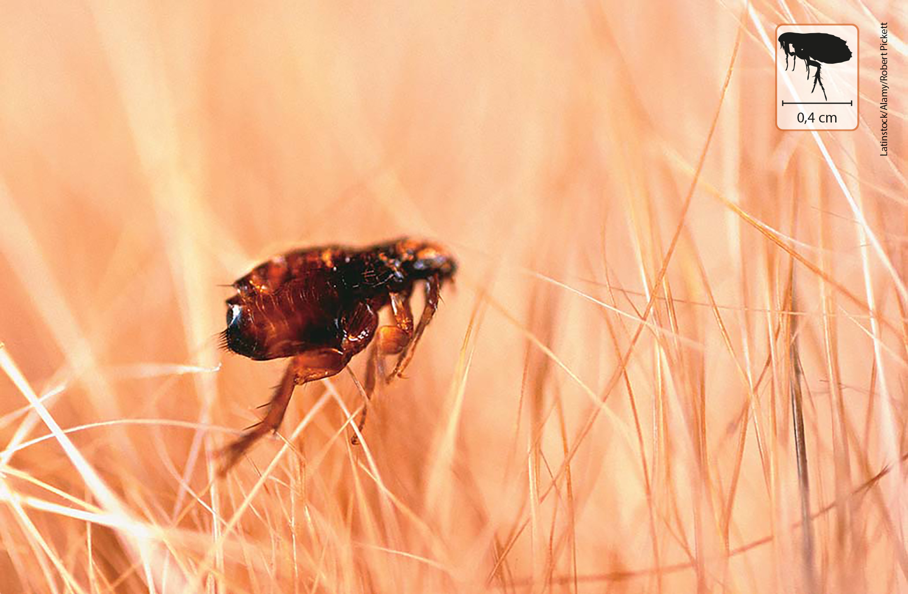
Pulga entre os pelos de um gato
Alguns vivem na superfície externa do corpo dos hospedeiros, tal como a pulga, a qual vive na pele de cães e gatos, sugando o sangue desses animais. Devido à perda de sangue, os animais parasitados se tornam cada vez mais fracos,
podendo, inclusive, morrer. Os parasitas que vivem na superfície externa do corpo dos hospedeiros são chamados de ectoparasitas (ecto – fora).
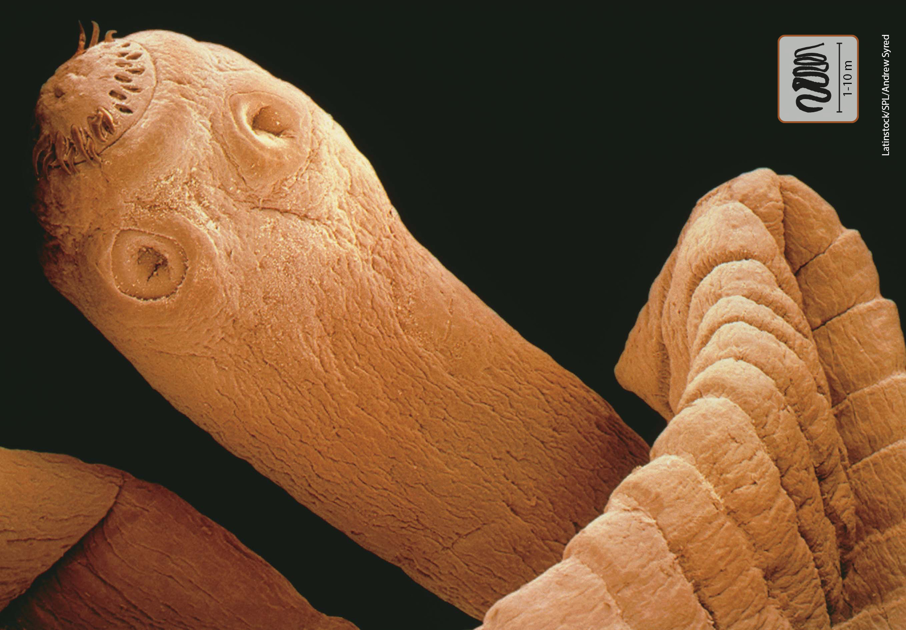
Taenia sp. em microscopia eletrônica com aumento de 35 x
Os parasitas que vivem no interior do corpo dos hospedeiros são chamados de endoparasitas (endo – dentro). Um exemplo bem comum é a tênia, também conhecida como solitária. Ela vive no interior do intestino das pessoas,
de onde absorve os nutrientes para sobreviver.
Existem casos de parasitismo também entre as plantas. É o que ocorre com o cipó-chumbo, que não tem clorofila e, portanto, não pode realizar a fotossíntese. Para obter alimento, ele apresenta raízes que penetram no caule da planta
hospedeira, sugando a seiva.
O cipó-chumbo parasita as plantas sobre as quais se desenvolve.
Canibalismo
O canibalismo é uma relação que ocorre entre seres vivos da mesma espécie, isto é, quando um indivíduo utiliza o outro como alimento. É o que ocorre com a aranha viúva-negra, que devora o macho após o acasalamento. Esse comportamento
garante nutrientes para a fêmea utilizar na produção dos ovos.
Também é canibalismo o que acontece com a fêmea do louva-a-deus. Ela pode devorar a cabeça do macho durante o acasalamento. Assim, ela ganha energia para a produção dos ovos.
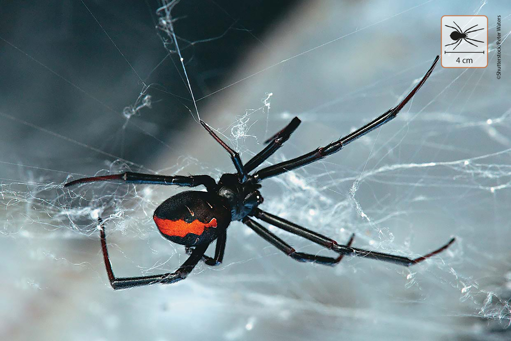
Aranha viúva-negra se alimenta do macho, que é menor que ela, após o acasalamento.
Predatismo
O predatismo é uma relação na qual um ser vivo serve de alimento para outro. Existem inúmeros casos de predatismo nos ecossistemas, como o do sapo, que se alimenta de insetos e de aranhas, as quais constroem suas teias para capturar
insetos, como as moscas. A onça, animal carnívoro bastante comum na América do Sul, é uma grande predadora, que se alimenta de veados, capivaras, macacos ou outros animais.
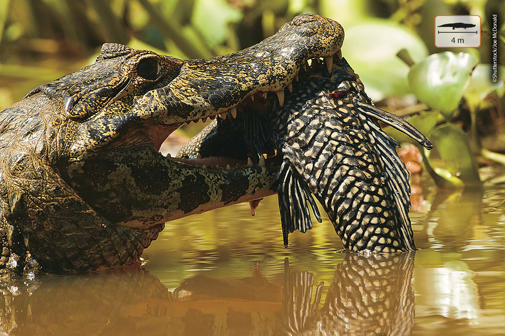
Jacaré se alimentado de peixe
Competição
A competição pode acontecer entre indivíduos de uma mesma espécie ou entre espécies diferentes quando as populações habitam um mesmo ambiente.
As espécies competem, principalmente, por água e alimento, mas também por parceiros sexuais, abrigo, proteção, iluminação ou outros fatores que afetem sua sobrevivência. Em uma competição, ambas as espécies podem ser prejudicadas.
Em uma floresta, as plantas, normalmente, competem por iluminação. As maiores levam vantagem e, por vezes, as que não recebem iluminação adequada acabam morrendo.
Plantas da Mata Atlântica competem por luz.
Organize as ideias
Observe a representação de um quintal de casa na qual é possível observar várias relações ecológicas. Na sequência, complete com as informações que estão faltando.
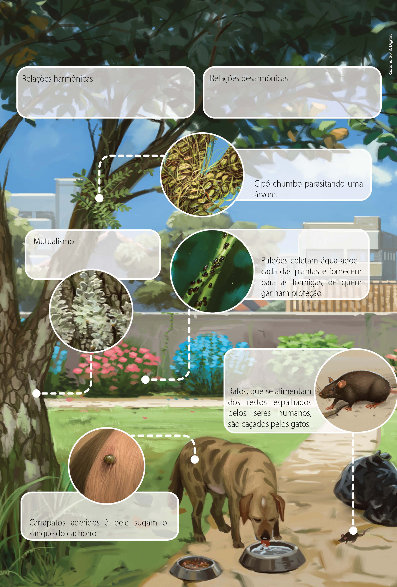
Atividades
1. Relacione a letra que indica cada relação ecológica ao ser vivo que a representa nesta lista e também ao exemplo de uma de suas características.
( a ) Mutualismo
( b ) Sociedade
( c ) Inquilinismo
( d ) Comensalismo
( e ) Parasitismo
( f ) Competição
( ) Liquens
( ) Plantas epífitas
( ) Machos disputando fêmeas
( ) Tubarão e rêmora
( ) Formigueiro
( ) Pulga e cachorro
2. As imagens a seguir representam algumas relações ecológicas desarmônicas que ocorrem na natureza. Que tal identificá-las e criar legendas? Siga o modelo a seguir.
Parasitismo
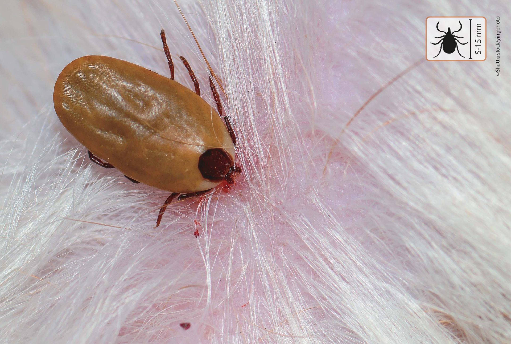
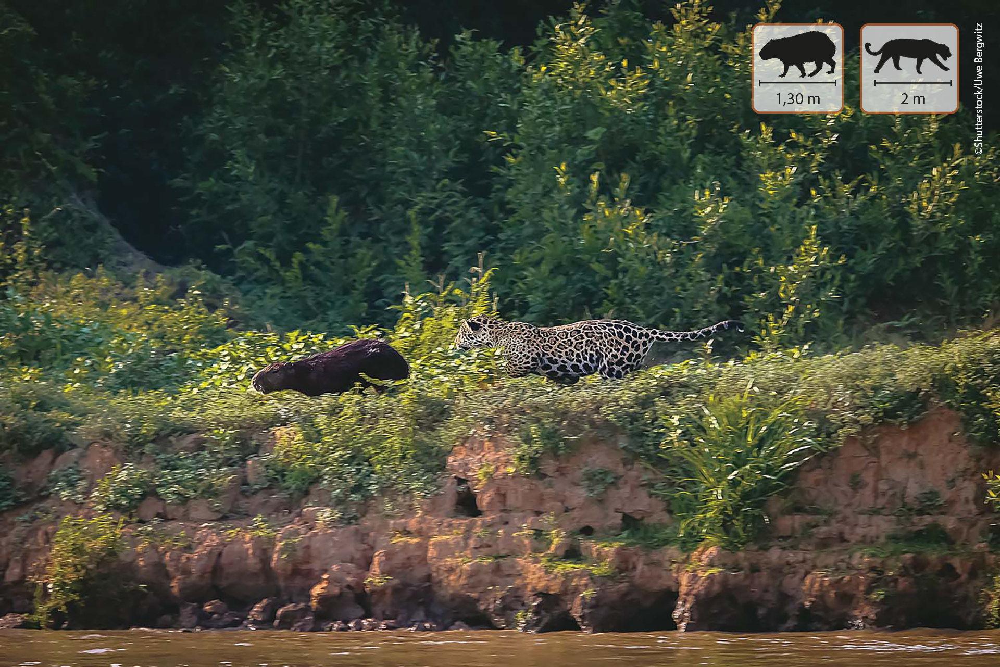
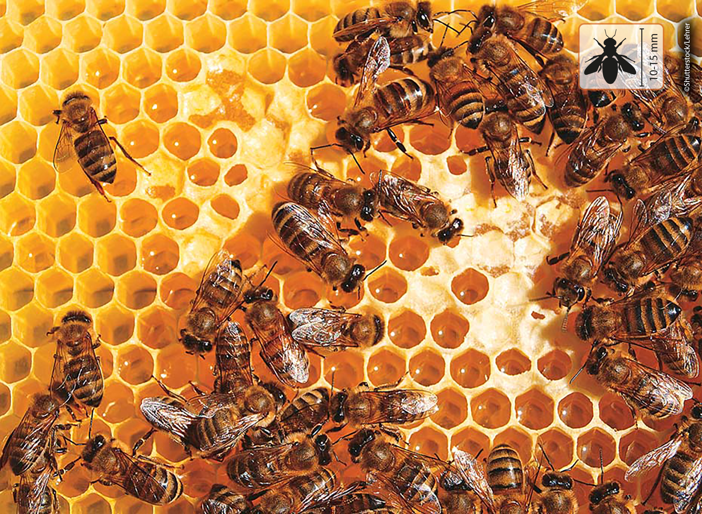
3. Sobre as relações ecológicas, utilize + para situações que indicam benefício; 0 para situações neutras (sem benefício ou prejuízo) e – para situações que geram prejuízo. Cada quadro
representa um ser participante na relação.
Sociedade
Protocooperação
Mutualismo
Comensalismo
Predatismo
Parasitismo
4. (OBB) Tom e Jerry (Hannah Barbera) podem ser amigos em alguns desenhos, mas a relação ecológica mais comum entre gatos e ratos é a:
a) sociedade
b) canibalismo
c) predação
d) comensalismo
e) competição
5. Analise as relações ecológicas descritas a seguir e faça o que se pede.
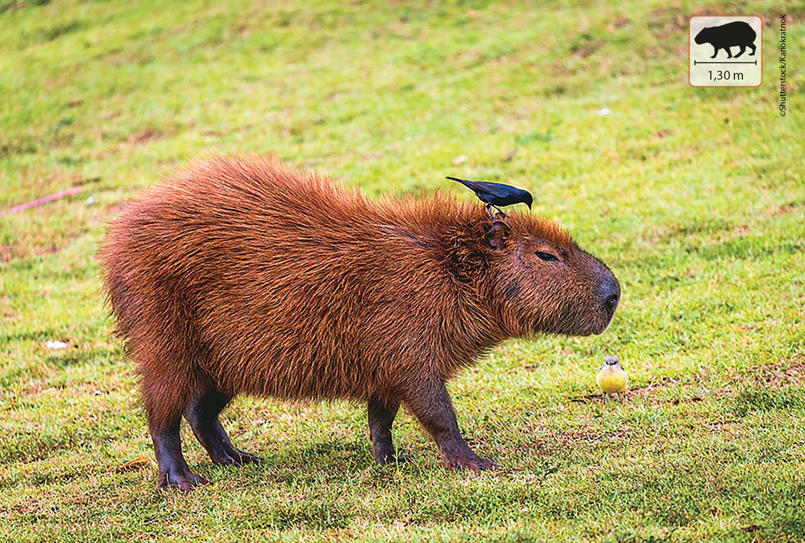
Algumas espécies de aves se alimentam de carrapatos que obtêm do corpo de grandes mamíferos. Os mamíferos se livram dos parasitas, enquanto as aves se alimentam.
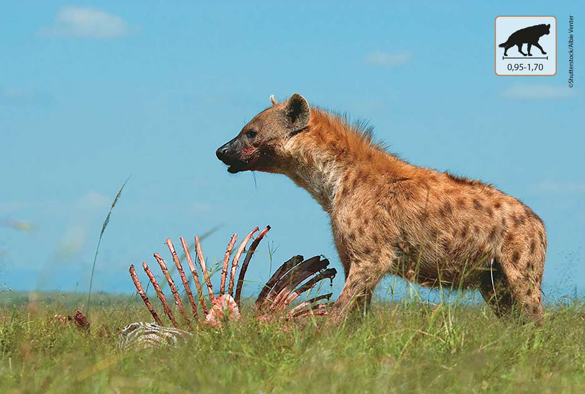
As hienas são animais carnívoros que se alimentam dos restos de presas deixados pelos leões.
Assinale V para as frases verdadeiras e F para as falsas.
( ) Na situação A, está descrito um exemplo de comensalismo.
( ) Se considerarmos a relação existente entre os carrapatos e a capivara, podemos dizer que ocorre o parasitismo.
( ) Na situação B, está descrito um caso de comensalismo.
( ) A relação entre o tubarão e a rêmora é a mesma que ocorre entre as hienas e os leões.
( ) A relação descrita na situação A é desarmônica.
( ) A relação entre hienas e leões é harmônica.
+ Zoom
A complexa relação entre girafas, árvores e formigas
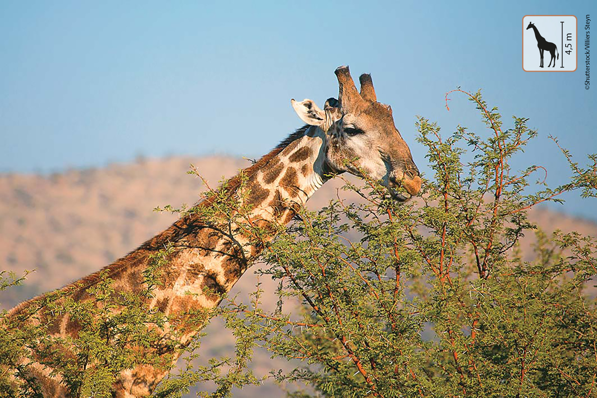
Girafa se alimentando de folhas de acácias
[…] Tudo começou quando um grupo de ecólogos levou um susto ao estudar uma área que havia sido cercada para evitar a presença de girafas e elefantes. Eles esperavam, depois disso, encontrar um aumento no número de
acácias, as árvores preferidas pelos herbívoros, mas, para seu espanto, as árvores pareciam mais sofridas e seu número havia diminuído.
Como explicar que a ausência de “comedores de árvores” diminuía o número de árvores? Instigados por essa observação, os ecólogos decidiram comparar as acácias de duas áreas de savana, uma em que os herbívoros
circulavam livremente e outra na qual eles haviam sido retirados fazia quinze anos. A descoberta foi surpreendente.
Os ecólogos observaram que nas áreas em que os herbívoros podavam regularmente as acácias, elas eram habitadas por uma espécie de formiga que vive no oco dos espinhos e se alimenta de um tipo de seiva secretada pela árvore. Essas
formigas defendem seu território de maneira agressiva. Se você, outro inseto ou um pequeno animal se encostar nessas árvores, as formigas tentam repelir a “invasão” com ferroadas agressivas. Essas formigas “do bem” praticamente não
causam danos à árvore – na verdade são “sustentadas” pela seiva que ela secreta. O que as formigas de fato estão fazendo é defender seu território de outras formigas (vamos chamá-las “do mal”) que, ao se instalarem na árvore, cortam
suas folhas, permitindo que outros insetos cavem buracos nos troncos, enfraquecendo assim a árvore. O que ocorre na savana é uma competição ferrenha entre essas espécies de formigas, cada uma dominando um grupo de árvores e
disputando espaço nelas. Mas, e as girafas? O que elas têm em comum com a competição das formigas “do bem” e as “do mal”?
O que os ecólogos notaram é que nas áreas em que os herbívoros foram retirados, as acácias, na ausência da poda constante promovida por girafas e elefantes, pararam de secretar a seiva que alimenta as formigas “do bem”.
Provavelmente, a secreção dessa seiva é uma reação da árvore à poda feita pelos herbívoros. Sem o suprimento de seiva, as agressivas formigas “do bem” acabam perdendo a competição para as formigas “do mal”. Nas áreas em que não
existem herbívoros de grande porte, as formigas “do mal” dominam um número maior de acácias. Como as formigas “do mal” são prejudiciais às acácias e, além disso, permitem que outros insetos ataquem as árvores, o resultado é que
estas se desenvolvem mais lentamente, o que explica por que as acácias se tornam mirradas na ausência de herbívoros.
REINACH, Fernando. A complexa relação entre girafas, árvores e formigas. In: ______. A longa marcha dos grilos canibais e outras crônicas sobre a vida na Terra. São Paulo: Companhia das Letras, 2010. p. 23-28.
ecólogos: aqueles que se dedicam ao estudo da Ecologia.
savana: local onde predomina uma vegetação de capim baixo, com árvores e arbustos dispersos.
Por meio da leitura do texto são verificados vários exemplos de como os seres vivos das mais diferentes espécies interagem para manter a alimentação, o abrigo, as condições para reprodução, entre outras necessidades para a
sobrevivência. Converse com um colega e identifiquem as relações ecológicas descritas no texto.